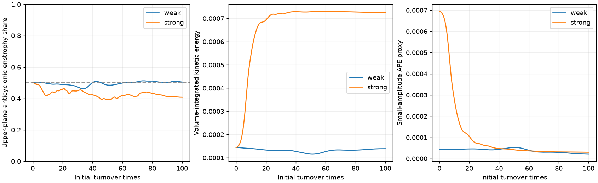

Both matched, unforced anelastic experiments completed 100 initial turnover times (native t=10000). There is no heating, cooling, beta, or imposed jet. These test evolution of pre-existing mixed-sign eddies, not convection-driven formation.
No anticyclonic preference established: the weak-deformation case remains close to sign symmetry at the upper sampled plane; the strong case develops a coherent cyclone–anticyclone pair with stronger cyclonic squared-vorticity content. Anticyclones are present; they are not preferential in this diagnostic.
| Case | Upper anticyclonic enstrophy share | Upper vorticity skewness |
|---|---|---|
| L/LD=0.5 | 50.4% | +0.090 |
| L/LD=2 | 40.8% | +1.209 |
Initially 50% and zero skewness. These are raw-plane statistics at z/H=0.8984, not vortex counts and not the filtered depth-mean measure used for the compressible runs. One realization only. Late upper-plane shares differ by less than one percentage point between turnovers 50–75 and 75–100 in each case; no extension to 200 has been launched.
Vorticity above, absolute passive tracer below, at three depths. Fixed scales across time and both cases. Mean concentration and RMS variation are printed on every tracer panel.
Vorticity above, absolute passive tracer below, at three depths. Fixed scales across time and both cases. Mean concentration and RMS variation are printed on every tracer panel.

The stronger-deformation initial state had approximately 16 times the available-potential-energy proxy, despite matched velocity fields. Its kinetic energy increased as this reservoir declined. These are not matched-total-energy states. KE plus the small-amplitude APE proxy declines about 15% (weak) and 10% (strong); this is not an exact numerical-energy residual, since the proxy is approximate and ordinary viscosity is present.
Both remain stably stratified at recorded points and pass their numerical guards. The result does not exclude deformation-related asymmetry in other vertical structures, shallow-water flow, or convection. Morphology and spectral concentration alone do not establish inverse energy transfer.
128×128×64; domain 8×8×1; vertical f=0.1, initial Ro=0.1, Re=2000; WENO9, ordinary viscosity and no explicit scalar diffusion. Horizontally periodic, impermeable stress-free lids. Same initial mixed-sign baroclinic velocity; seed 261130.
Vorticity: fixed symmetric asinh width 0.02 in ζ/f, full extrema per depth shared across cases. Tracer: fixed centered asinh about C=0.1, full extrema across cases, width 0.000590199. No clipping or framewise normalization. This also makes the weak-case vorticity visible at late times.
1000 actual saved states at 20 fps. Output normally every 0.1 turnover; the original restart boundary lacks the 25.0 frame, leaving a labeled 24.9-to-25.1 gap without interpolation. Actual endpoint 100 is saved. Original and continuation GPU jobs: 2308454/2308455 and 2311446/2311447. Continuation allocations: 13m39s and 11m19s. Analysis and rendering were performed on Unity.
Diagnostics, scales and media verification · Weak three-depth sign histories · Strong three-depth sign histories · Continuation code